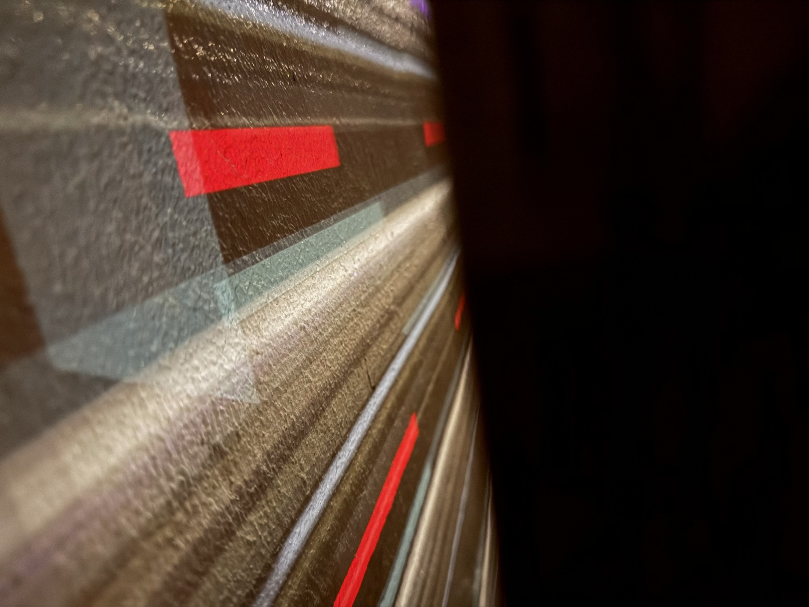
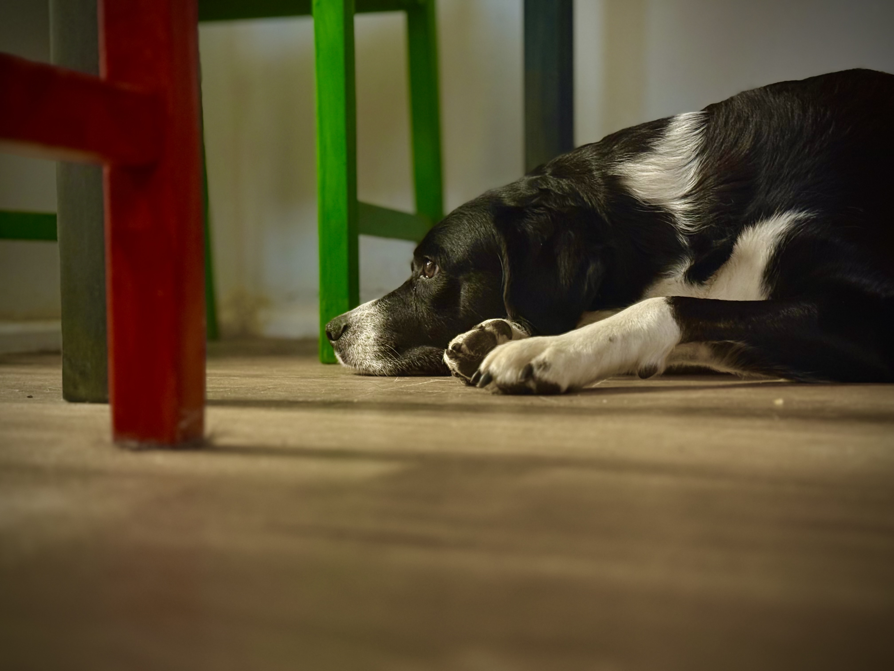
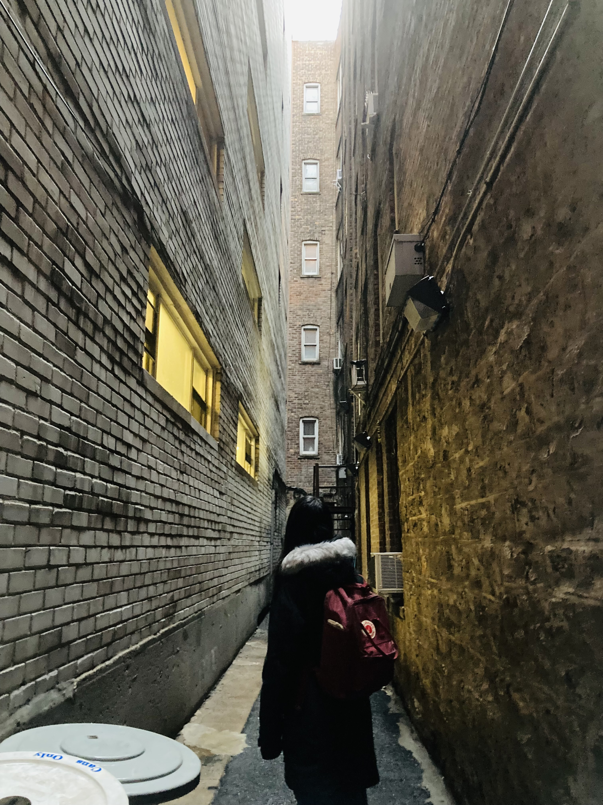
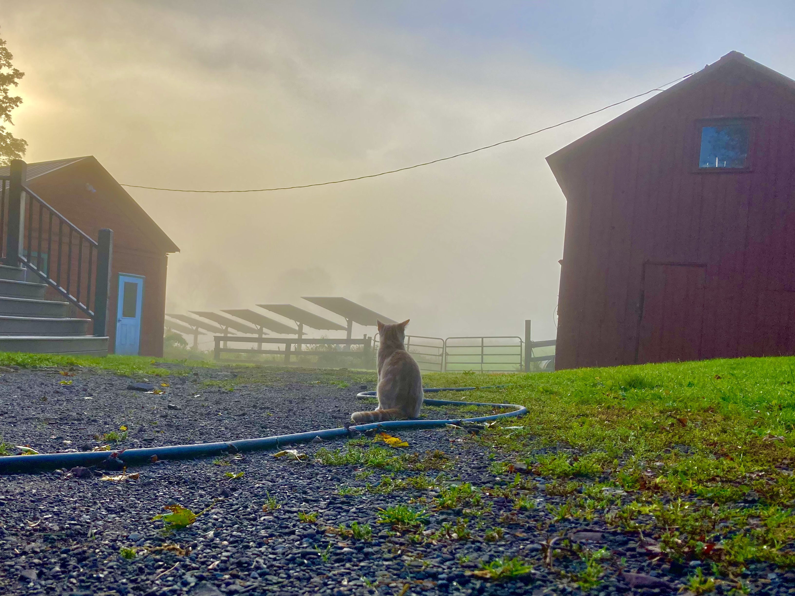
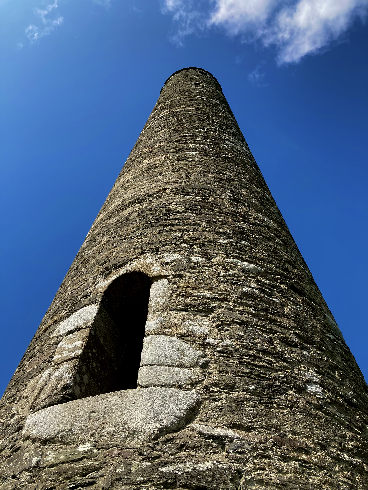
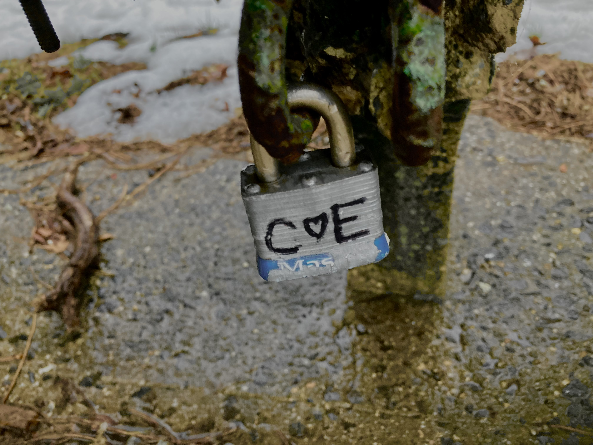
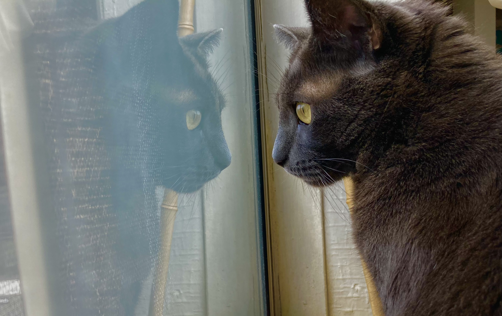
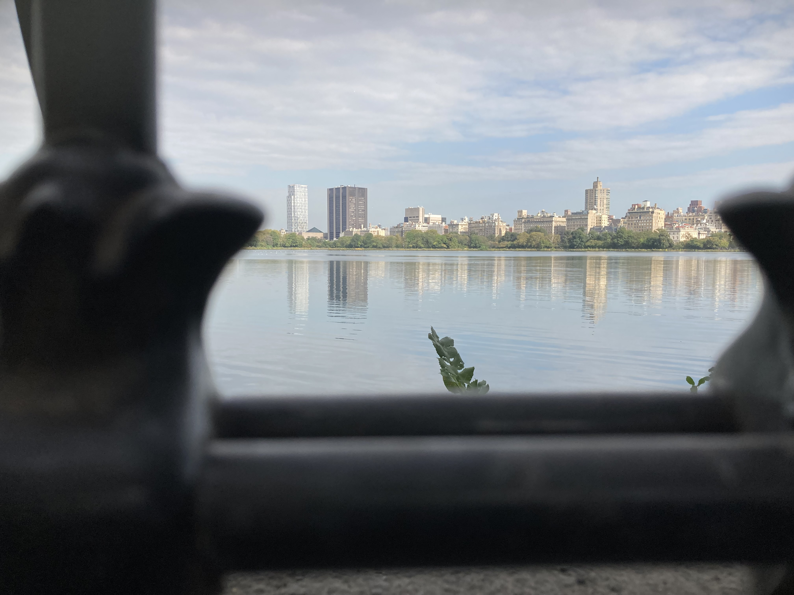
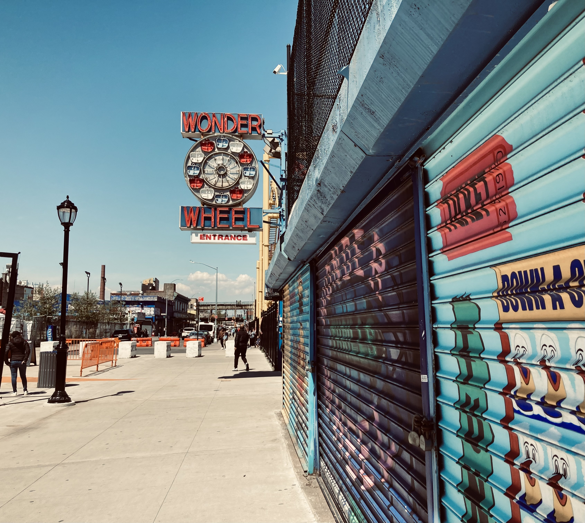
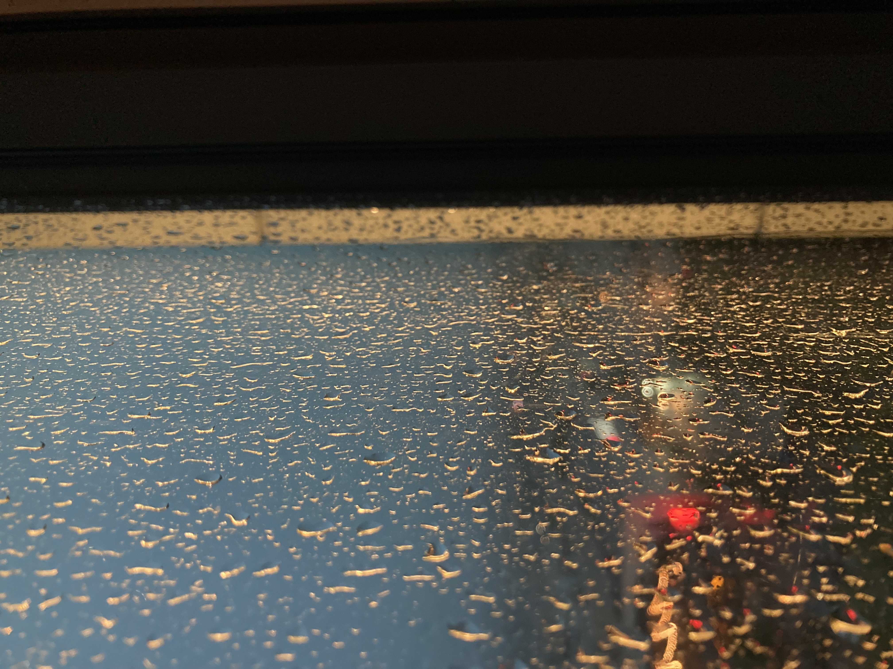
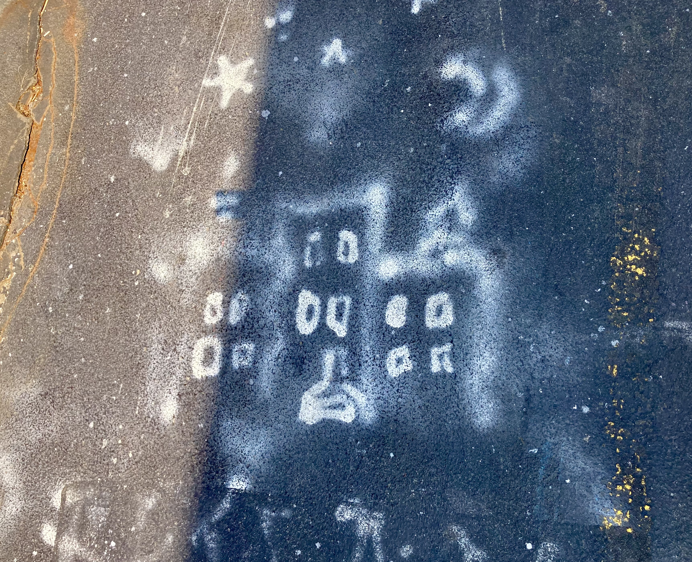
Role: Cinematographer
Director: Kevin Scott
Screenwriter: James Bosley

This mocumentary-style short film I worked on in 2024. It was funded by and screened at the Inwood Artworks film festival. the plot follows two Hessian soldiers who fall asleep on the grounds of the Dykman Farmhouse during the revolutionary war and wake up in the year 2024 in modern-day New York.The film was based on a script but was mostly improvised by the two stars: Kevin Scott and Matt Higgins.The filming mostly consisted of following the two actors around the streets of New York while the actors improvised interactions with modern-day objects and people on the street. The short was filmed over the course of two days.
Role: Cinematographer
Director: Adrian Miranda
This short film follows two immigration officers preparing to raid a home in Washington Heights when one of them starts having second thoughts about the morality of their actions. It was shot in one day in two locations, a car parked on the street, and inside an apartment. The film was selected for the 2026 Latino Film Market film festival.
Role: Camera Operator
Director: Nate Starkey
Cinematographer: Kevin Scott
This Noir short was shot over the course of 1 week in Los Angeles. The story of the film jumps back and forth in time following a horror filmmaker accused of murdering his ex-wife and her new husband, with a supernatural twist at the end. The shoot took place in several locations, including a car driving in the Hollywood Hills, and interrogation room, multiple houses, and a performance space. For the film, and audience was invited to a performance of an original song written for the film, and the performance was filmed live for the movie.